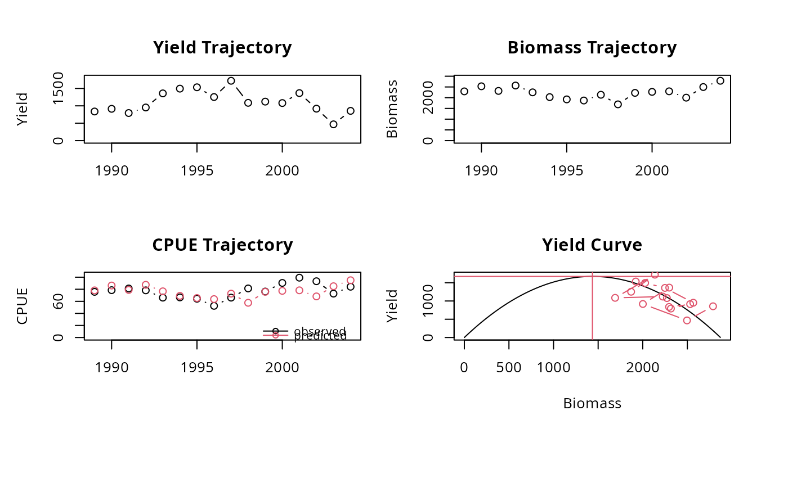
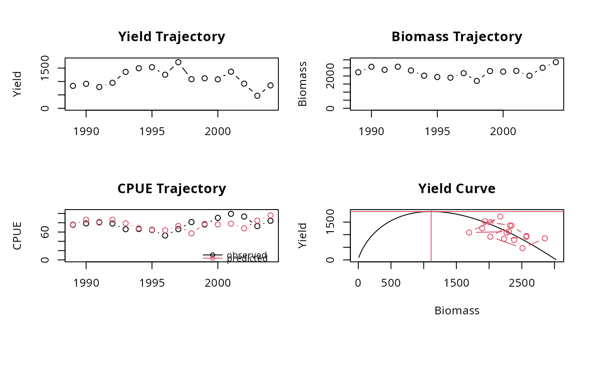

This function applies the production models under non-equilibrium conditions by applying time series fitting using non-linear least squares minimisation.
Usage
prod_mod_ts(
data,
method = "Schaefer",
B0_init = NA,
B0_est = NA,
effort_unit = 1,
plot = TRUE
)Arguments
- data
a dataframe of parameters
yearyears,yieldcatch in weight of fishery per year,effortfishing effort per year,CPUEcatch per unit of effort per year (optional).
- method
indicating if Schaefer or Fox model should be applied. First assumes a logistic relationship between growth rate and biomass, whereas second assumes it to foolow the Gompertz distribution (Richards 1959). Default is the dynamic Schaefer model.
- B0_init
numeric; if realistic initial estimate for virgin biomass is available. If NA initial estimate for virgin biomass is set to two times average yield of all or part of yield values (see
B0_est).- B0_est
intital value of virgin biomass estimating using all yield values (NA) or first years of time series, then provide numerical representing number of years
- effort_unit
multiplication factor for the unit of effort. Default is 1.
- plot
logical; if TRUE (default) a graph is displayed
Value
A list with the input parameters and following list objects:
Bvec: biomass vector,
CPUE_hat: predicted CPUE,
K: carrying capacity,
r: population growth rate,
q: catchability coefficient,
MSY: maximum sustainabale yield (MSY),
Bmsy: biomass at MSY,
Emsy: fishing effort at MSY
Fmsy: fishing mortality at MSY,
Details
Either catch per unit of effort (CPUE) is inserted
into the model directly (by a column CPUE) or CPUE is calculated from
the catch and effort, then these two vectors should have required units.
Whenever a good estimate for the virigin biomass is available, this estimate
should be inserted for B_init. The default approach for the initial
estimate of the virgin biomass is to multiply the average yield by 2 (Dharmendra
and Solmundsson, 2005). Alternatively, just a part of the time series of
yield values can be choosen to represent the virgin biomass.
The minimisation procedure is based on least error sum of squares (SSE). For
the logistic (Schaefer) method the standard calculation of SSE is applied
(sum((CPUE - predicted CPUE)^2)), for
the method with Gompertz distribution (Fox) SSE is calculated according to
the Thiel's U statistic sqrt(sum(CPUE - predicted CPUE)/sum(CPUE(t) - CPUE(t-1)))
(Wittink, 1988).
References
Dharmendra, D., Solmundsson, J., 2005. Stock assessment of the offshore Mauritian banks using dynamic biomass models and analysis of length frequency of the Sky Emperor (Lethrinus mahsena). Fisheries Training Program The United Nations University, 61
Hilborn, R. and Walters, C., 1992. Quantitative Fisheries Stock Assessment: Choice, Dynamics and Uncertainty. Chapman and Hall, New York
Prager, M. H., 1994. A suite of extensions to a non-equilibrium surplus production model. Fishery Bulletin 92: 374-389
Richards, F. J., 1959. A flexible growth function for empirical use. Journal of experimental Botany, 10(2), 290-301.
Wittink, D. R., 1988. The application of regression analysis. Allyn and Bacon. Inc. Boston. MA. 324p.
Examples
data(emperor)
prod_mod_ts(emperor, method = "Schaefer")
#> Warning: Inf replaced by maximum positive value
#> Warning: Inf replaced by maximum positive value
#> Warning: Inf replaced by maximum positive value
#> Warning: Inf replaced by maximum positive value

#> $year
#> [1] 1989 1990 1991 1992 1993 1994 1995 1996 1997 1998 1999 2000 2001 2002 2003
#> [16] 2004
#>
#> $Y
#> [1] 837 914 793 952 1358 1494 1533 1253 1720 1086 1121 1080 1366 918 468
#> [16] 855
#>
#> $f
#> [1] 11.056803 11.643312 9.753998 12.173913 20.544629 22.466165 23.841369
#> [8] 23.866667 26.021180 13.341523 14.711286 11.933702 13.770161 9.839228
#> [15] 6.428571 10.154394
#>
#> $method
#> [1] "Schaefer"
#>
#> $CPUE
#> [1] 75.7 78.5 81.3 78.2 66.1 66.5 64.3 52.5 66.1 81.4 76.2 90.5 99.2 93.3 72.8
#> [16] 84.2
#>
#> $Bvec
#> [1] 2294.821 2531.286 2315.647 2566.720 2249.054 2026.637 1921.698 1869.476
#> [9] 2136.237 1690.426 2224.241 2271.081 2297.192 2001.346 2496.146 2787.990
#>
#> $CPUE_hat
#> [1] 78.15481 86.20810 78.86407 87.41487 76.59611 69.02126 65.44733 63.66882
#> [9] 72.75390 57.57090 75.75105 77.34630 78.23555 68.15992 85.01133 94.95068
#>
#> $K
#> [1] 2871.274
#>
#> $r
#> [1] 2.329968
#>
#> $q
#> [1] 0.03405704
#>
#> $MSY
#> [1] 1672.494
#>
#> $Bmsy
#> [1] 1435.637
#>
#> $Emsy
#> [1] 34.20685
#>
#> $Fmsy
#> [1] 1.164984
#>
#> attr(,"class")
#> [1] "prod_mod_ts"
prod_mod_ts(emperor, method = "Fox")

#> $year
#> [1] 1989 1990 1991 1992 1993 1994 1995 1996 1997 1998 1999 2000 2001 2002 2003
#> [16] 2004
#>
#> $Y
#> [1] 837 914 793 952 1358 1494 1533 1253 1720 1086 1121 1080 1366 918 468
#> [16] 855
#>
#> $f
#> [1] 11.056803 11.643312 9.753998 12.173913 20.544629 22.466165 23.841369
#> [8] 23.866667 26.021180 13.341523 14.711286 11.933702 13.770161 9.839228
#> [15] 6.428571 10.154394
#>
#> $method
#> [1] "Fox"
#>
#> $CPUE
#> [1] 75.7 78.5 81.3 78.2 66.1 66.5 64.3 52.5 66.1 81.4 76.2 90.5 99.2 93.3 72.8
#> [16] 84.2
#>
#> $Bvec
#> [1] 2228.616 2568.446 2382.240 2573.392 2342.052 2020.304 1934.964 1895.109
#> [9] 2172.503 1695.222 2303.986 2267.492 2317.241 2019.067 2510.997 2852.448
#>
#> $CPUE_hat
#> [1] 74.97226 86.40437 80.14026 86.57075 78.78830 67.96449 65.09359 63.75283
#> [9] 73.08458 57.02849 77.50776 76.28005 77.95364 67.92285 84.47174 95.95840
#>
#> $K
#> [1] 3027.226
#>
#> $r
#> [1] 1.724169
#>
#> $q
#> [1] 0.03364072
#>
#> $MSY
#> [1] 1920.128
#>
#> $Bmsy
#> [1] 1113.654
#>
#> $Emsy
#> [1] 18.85472
#>
#> $Fmsy
#> [1] 0.6342864
#>
#> attr(,"class")
#> [1] "prod_mod_ts"